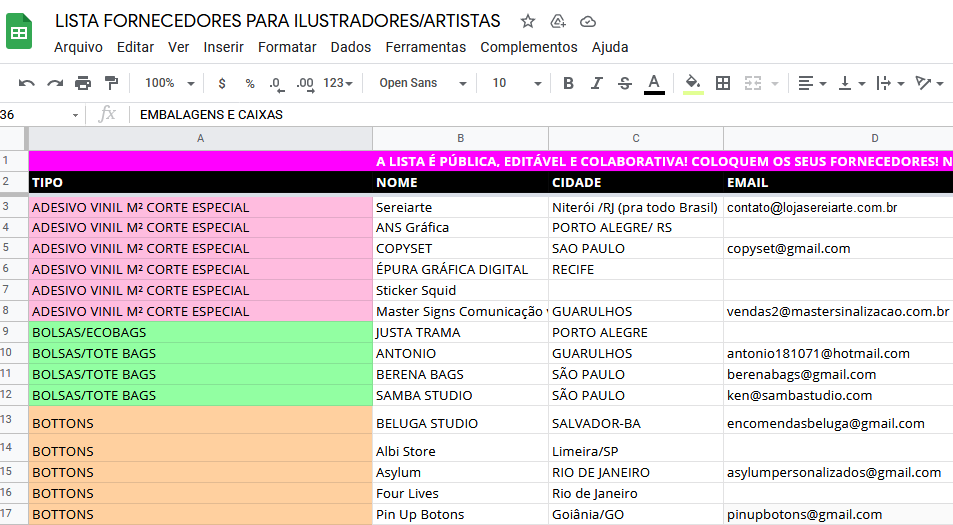

O serviço seria um website que lista fornecederes de produtos/matérias primas sobre as mais variadas áreas de interesse do consumidor.
Como um exemplo, esses dias eu vi um grupo de artistas/ilustradores terem que usar uma planilha no google de forma colaborativa para listar fornecedores recomendados de adesivos, embalagens, caixas, impressão, molduras, papéis especiais, stickers etc. A ideia seria criar um website que facilitaria o usuário a encontrar fornecedores para o produto/serviço que ele planeja criar, listando esses fornecedores de acordo com o seu local, preço, oferta, reputação etc.
Não conheço serviços parecidos. Mesmo se compararmos com sites de comércio eletrônico como "Mercado Livre", a ideia ainda seria diferente pois aqui se buscaria ter um contato mais próximo entre o cliente e o fornecedor.